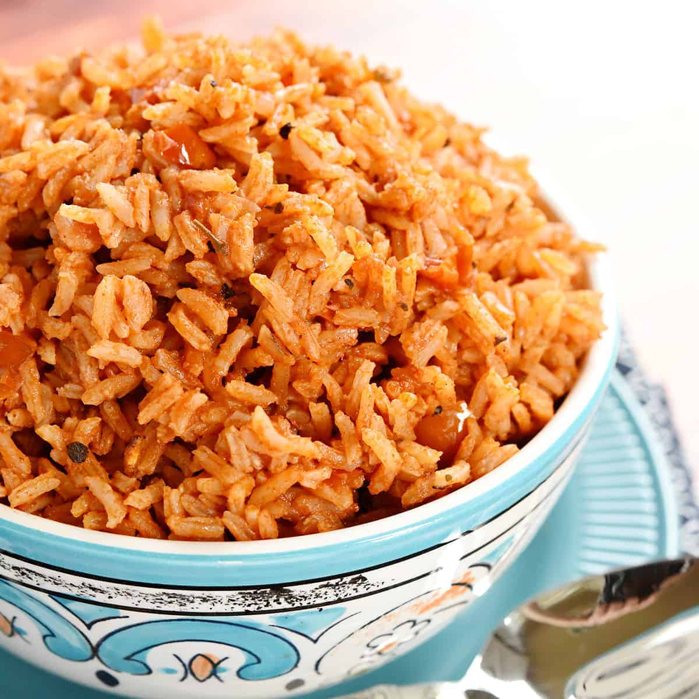
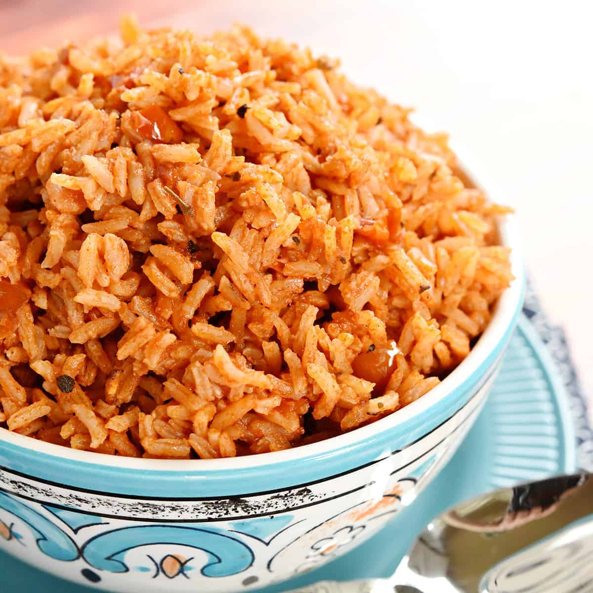

Spanish Rice
(6 servings)
 

This pairs well with enchiladas, tacos, etc.
- 2 T. oil
- 2 T. chopped onion
- 1 1/2 c. uncooked white rice
- 2 c. chicken broth
- 1 c. chunky salsa
- Heat oil in a large, heavy skillet over medium heat.
- Stir in onion and cook until tender, about 5 minutes.
- Mix rice into skillet, stirring often.
- When rice begins to brown, stir in chicken broth and salsa.
- Reduce heat, cover, and simmer 20 minutes.